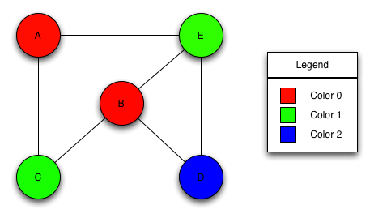

sequential_vertex_coloring
sequential_vertex_coloring sequential_vertex_coloring
sequential_vertex_coloring
template<class VertexListGraph, class OrderPA, class ColorMap>
typename property_traits<ColorMap>::value_type
sequential_vertex_coloring(const VertexListGraph& g, OrderPA order,
ColorMap color);
template<class VertexListGraph, class ColorMap>
typename property_traits<ColorMap>::value_type
sequential_vertex_coloring(const VertexListGraph& g, ColorMap color);
Computes a vertex coloring for the vertices in the graph, using a simple algorithm [59]. Given vertices ordered v1, v2, ... , vn, for k = 1, 2, ..., n the algorithm assigns vk to the smallest possible color. The algorithm does not guarantee an optimum coloring.
Here is the coloring that would be produced on a graph given the vertex ordering A, B, C, D, E.
,
The graph object on which the algorithm will be applied. The type Graph must be a model of Vertex List Graph and Adjacency Graph.OUT: ColorMap color
Python: The parameter is named graph.
This property map records the colors of each vertex. It must be a model of Writeable Property Map whose key type is the same as the vertex descriptor type of the graph and whose value type is an integral type that can store all values of the graph's vertices_size_type.IN: OrderPA order
Python: Must be an vertex_int_map for the graph.
A mapping from integers in the range [0, num_vertices(g)) to the vertices of the graph.
Default: A property map ordering the vertices in the same way they are ordered by vertices(g).
Python: Unsupported parameter.
typedef adjacency_list<listS, vecS, undirectedS> Graph;
typedef graph_traits<Graph>::vertex_descriptor vertex_descriptor;
typedef graph_traits<Graph>::vertices_size_type vertices_size_type;
typedef property_map<Graph, vertex_index_t>::const_type vertex_index_map;
typedef std::pair<int, int> Edge;
enum nodes {A, B, C, D, E, n};
Edge edge_array[] = { Edge(A, C), Edge(B, B), Edge(B, D), Edge(B, E),
Edge(C, B), Edge(C, D), Edge(D, E), Edge(E, A),
Edge(E, B) };
int m = sizeof(edge_array) / sizeof(Edge);
Graph g(edge_array, edge_array + m, n);
// Test with the normal order
std::vector<vertices_size_type> color_vec(num_vertices(g));
iterator_property_map<vertices_size_type*, vertex_index_map>
color(&color_vec.front(), get(vertex_index, g));
vertices_size_type num_colors = sequential_vertex_coloring(g, color);
| Copyright © 1997-2004 |
Andrew Lumsdaine,
Indiana University (lums@osl.iu.edu) Douglas Gregor, Indiana University (dgregor -at- cs.indiana.edu)) |